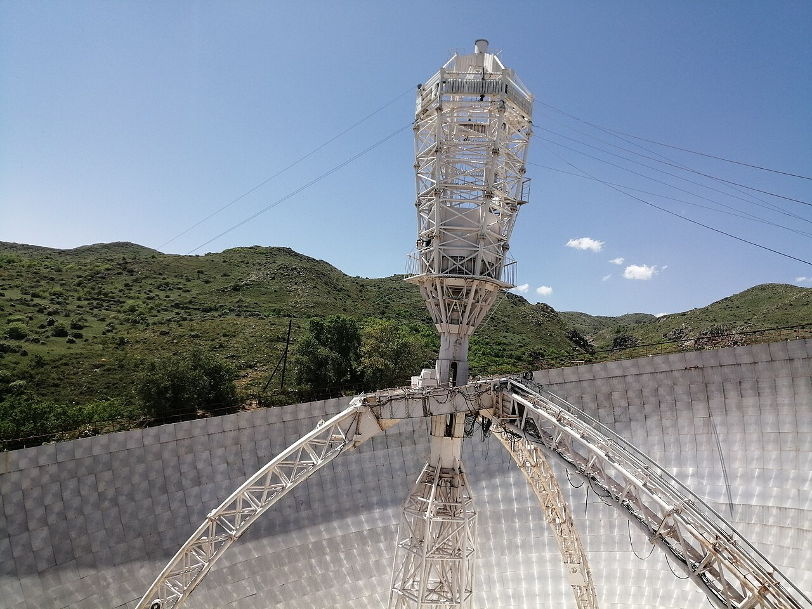

Всё начинается
с идеи
Парис Геруни разрабатывает теорию многозеркальных сферических антенн. Так рождается замысел необычного телескопа на склоне Арагаца.

+ АРАГАЦ, АРМЕНИЯ 40°20′00″ N 44°15′15″ E
РОТ–54/2.6
Инженерное чудо XX века на склоне Арагаца.
Создан, чтобы слышать и видеть далёкие галактики.
ИНЖЕНЕРИЯ НЕВОЗМОЖНОГО
РОТ–54/2.6 / УСТРОЙСТВО54 метра точности. Тысячи деталей.
Одна смелая идея, опередившая время.
Выберите точку, чтобы узнать больше.
54м
Выложено из 3 600 алюминиевых щитов, отлитых вручную и отполированных с точностью до 70 микрон. Огромная чаша собирает радиосигналы далёкого космоса.
Пультовая и научный корпус построены из армянского красного туфа. Здесь советский космический модернизм встречается с национальной архитектурой.
ЧЕЛОВЕК, КОТОРЫЙ УСЛЫШАЛ КОСМОС
Учёный. Инженер. Визионер.
Парис Мисакович Геруни — доктор технических наук, профессор, академик НАН Армении и автор более 450 научных работ.
Он не только спроектировал РОТ-54/2.6, но и создал рядом экспериментальную солнечную электростанцию «Арев», а также разработал собственный метод антенных измерений.
Увидеть дальше.
Услышать больше.
Представить невозможное.
ОТ СМЕЛОЙ ИДЕИ ДО НАУЧНОГО НАСЛЕДИЯ
1960–Е — НАШИ ДНИПарис Геруни разрабатывает теорию многозеркальных сферических антенн. Так рождается замысел необычного телескопа на склоне Арагаца.
Между сёлами Оргов и Тегер вырубается котлован и возводятся корпуса Арагацского научного центра. Впереди — десять лет работы.
Завершается создание радиооптического телескопа. Начинается новый этап — измерения, настройка и наблюдения за Вселенной.
Телескоп привлекает внимание международного научного сообщества. На Арагац приезжают исследователи из разных стран.
После сложных лет сокращения финансирования телескоп законсервирован. Сам Геруни продолжал работать на комплексе до конца жизни.
Уникальный памятник науки и архитектуры хранит память о смелом эксперименте. Его будущее — новая глава этой истории.
ПРОКРУТИТЕ, ЧТОБЫ ПРОЙТИ СКВОЗЬ ВРЕМЯ 01 — 06
ЕСТЬ МЕСТА, КОТОРЫЕ НУЖНО ПОЧУВСТВОВАТЬ
Село Оргов, в часе езды от Еревана.
Горный воздух, тишина и 54 метра
человеческой смелости.
Территория закрытого научного центра. Посещение необходимо заранее согласовать с сотрудниками объекта. Сайт не принимает заявки на экскурсии.